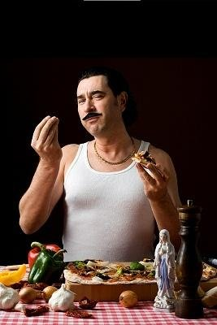

|
|
||
| Established 2014 | "All The News That's The Shit" | Number 69 |
MADONN': "JERSEY SHORE" & THE DECLINE OF WESTERN CIVILIZATION
(Note: The following was written by Macky D. Co-Creator Ted "Spicy Meatball" Pirro on April 10, 2010 during the height of "Jersey City" mania both pro and con. Enjoy!)
For the uninitiated there is a big brew ha ha over the recently completed first season of an MTV reality show entitled JERSEY SHORE. The premise centers around a cluster of monosyllabic mooks of Italian heritage that share a houseboat on the jersey shore. These cadre of cretins resemble third tier extras from "The Sopranos" while displaying more six packs than your corner liquor store and more suntans than brains. Most controversial are the participant's frequent referrals to themselves as 'guidos' and 'guidettes', which has gotten up the ass of such organizations as "The National Italian American Foundation" and "The Order of Sons of Italy In America" and probably "The International House Of Pancakes" as well.
In full disclosure, I must confess that I have not actually watched a complete episode of this pageantry. My lone exposure being a YouTube clip of a petite firecracker identified only as "Snooki" with layers of big hair set with enough Aqua velvet to ignite a small zeppelin. This enchantress proceeded to pontificate on the joys of dating men who are "built but not too brainy". (I shit you not –exact words!) My I.Q. plummeted faster then the NASDAQ on 9/12/2001! Once I eventually recovered brain cells, I reconciled the shows appeal - a sort of 'Schadenfreude' for young middle class Waspish types with no ethnic identity. Simultaneously they can feel superior to and indulge in this forbidden fruit of an exotic yet rougher culture. Just replace the Jerry Springer White Trash mutants with guidos.

|
| Aren't you glad this isn't your daughter? |
All this means big exposure and big bucks for MTV's parent company Viacom. Jersey Shore is the debased offspring of the country's appreciation of one of the greatest television series ever, The Sopranos. Italians are hot! Hot! Hot! And as their wont I've heard tales of rival networks readying "Italian" themed shows of their own to cash in on the action. Check this out:
CBS is reviving one of its classic 60's sitcoms with an Italian twist. Would you believe Danny DeVito starring in "The Beverly HillGuineas"? Here's the revamped theme song:
"Come and listen to a story 'bout a mook named Vito
Just your average, ordinary Bensenhurst guido
Then one day he was shootin' Mullenyams
When a bullet ricocheted, hit him in his friggin' arm.
He won a lawsuit from the city-40 million-what a wad!
His goombahs said "Hey V—don't be fuckin' Stunad!"
They said "'California' is the place you outta be"
So he packed up his Camaro and he moved to Beverly-
Hills that is-Porno stars-Swimmin' pools and WEED"
NBC has to fill that 10 O'clock slot after the Jay Leno debacle. They're trying some "high concept" programming. Remember that failed Steven Bochco hybrid drama/Musical from the 90's where the police spontaneously burst into song called "Cop Rock"? Well, the peacock network is reviving the idea only this time they're using paisans. They've lined up famed composer Alan Menken to write the songs and they're calling it "Wop Rock". One can speculate what time signature he'll have to use for the up-tempo number "You Touch That One More Time, I'm Gonna Stab You In Your Fuckin' Face". I was privy recently to hearing the demo for the charming love ballad used during a tender romantic scene called "Your Great Big Ass (Is The Apple Of My Eye)" and I have to tell you it choked me up-but then I'm an old softy.
Not to be outdone, ABC is developing a working class Italian version of "Who Wants to be a Millionaire". They've recruited old school Italian comic Pat Cooper to act as host. Contestants will have to answer questions with various degrees of difficultly. If successful, a panel reveals part of a photograph. The more correct answers, the more photos are revealed to show a "distinguish feature of a famous Italian". For example "Abe Vigoda's eyebrows", "Sophia Loren's cleavage", "Frank Zappa's moustache" or "Jay Leno's chin". Of course the show's title is "What the FUCK Are You Lookin' At?" ( I heard from an on set source that during the taping of the pilot there was some testiness when Cooper asked a contestant what they did for a living and he replied "What are you writin' a fuckin' book? Let's Fuckin' PLAY HERE!". Apparently there was also some confusion regarding a parting gift. A guy won a stingray and was expecting a sports car. Boy was he surprised when Cooper shoved a large fish up his ass!).
Unfortunately all this attention on the "earthier" side of Italian culture has brought out the "brave and compassionate" souls who despite that pesky first amendment have risen to save us from ourselves. The most vocal front men have been New Jersey Senator Joseph F. Vitale(D.) and Andre DiMino, president of something called UNICO. Both have demanded VIACOM cancel "Jersey Shore". The latter has even issued a statement declaring:
"(MTV) are blatently as well as subliminally bashing Italian-Americans with every technique possible.(The cast) are an embarrassment to themselves, their heritage and their families".
Sen. Vitale’s attachment to this issue is hardly surprising given politicians inadequacies with relevent issues usually fore shadow's attacking symbolic ones (and as the late, great George Carlin once reminded us "attacking symbols are for the 'Symbol' minded"). The good senator has projected substance to a shadow to appease constituencies who probably line his coffers. He has even going as far to proclaim that the show "violates New Jersey hate and bias crimes laws. The acts (documented on the show) violate the spirit of New Jersey law and jeopardize the open pursuit of freedom and opportunity."
Such rhetoric makes one imagine a wave of agitated constituents of Italian ancestry frantically phoning the senator with an exaggerated Chico Marx/Super Mario accent:
"Mama Mia, Senator-Thisa show-she's a making us a all looka lika dummies witha the wifebeaters and the biga hair and itsa makin' me CRAZY!!!"
|  |
| Madonn'! I'ma going BOTZY! |
The sad truth regarding "Jersey Shore" are that its participants are an ethnic reality swept under the cultural carpet. Our Tribe's dirty (not so) secret, given full display at a time when just being on television is more important than doing anything significant on television. Sad to say almost all ethnic stereotypes are based on reality-the danger exist when that reality is viewed through a distorted prism and that refracted light is cast over the entire group. Regardless of Vitale's intentions, the common rhetoric him and his ilk use to rationalize censorship is "it reinforces negative images of (fill in your ethnic group)".
Listen Strunz, nobody is going to "hate" Italians or any other group because a bunch of morons cavort on a houseboat. Any Social Scientist will tell you your environment is the predominant influence of your ideals. Bigotry and prejudice of the observer as well as the behavior and values of the participant originate in the home and are most often passed down through generations like a hideous heirloom. It is the individual's responsibility to expand their horizons and their mind to break the chain.
Certainly the Italian community is positively reinforced in the national landscape with leaders in Entertainment, Academia, Law, Sports, literature and politics. A quick Google search of "prominent Italian Americans" will confirm that. Most of whom I reckon have probably never worn a "wifebeater" in their lives. You can't have such a vital group of people without its dark side. As for Sen. Vitale and Mr. Dimino, if you don't like what you see on your screen-just change the friggin' station.